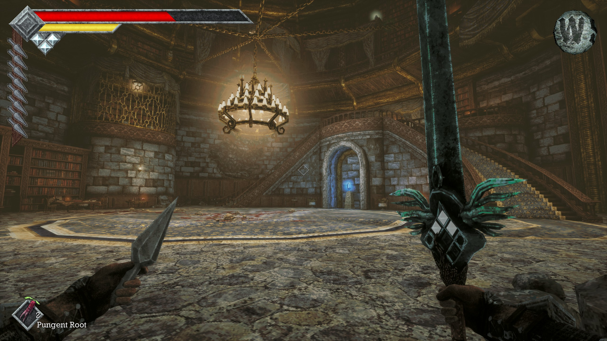
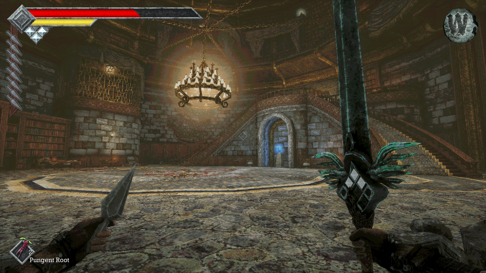
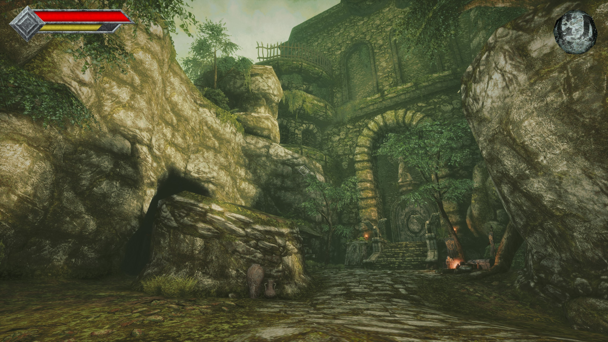
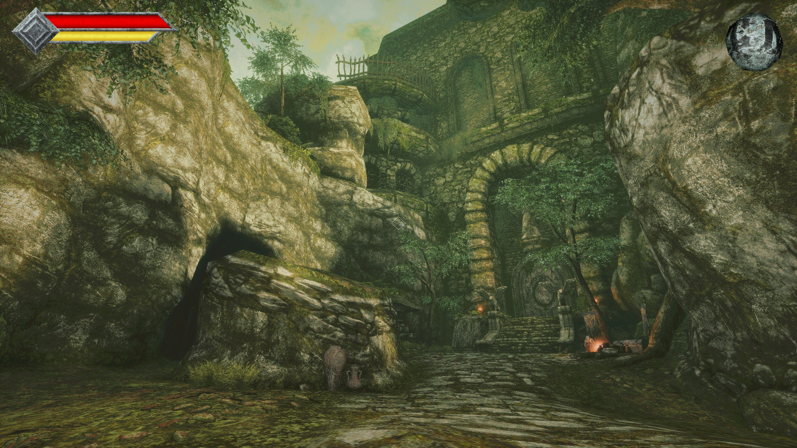
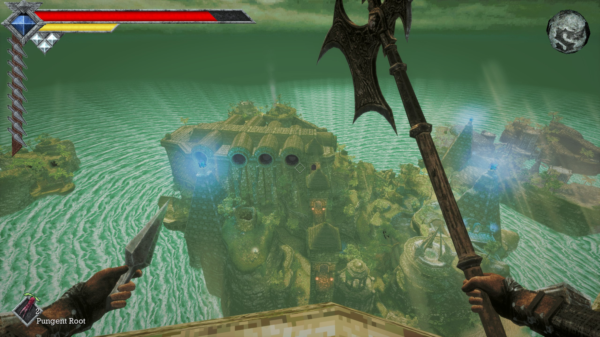
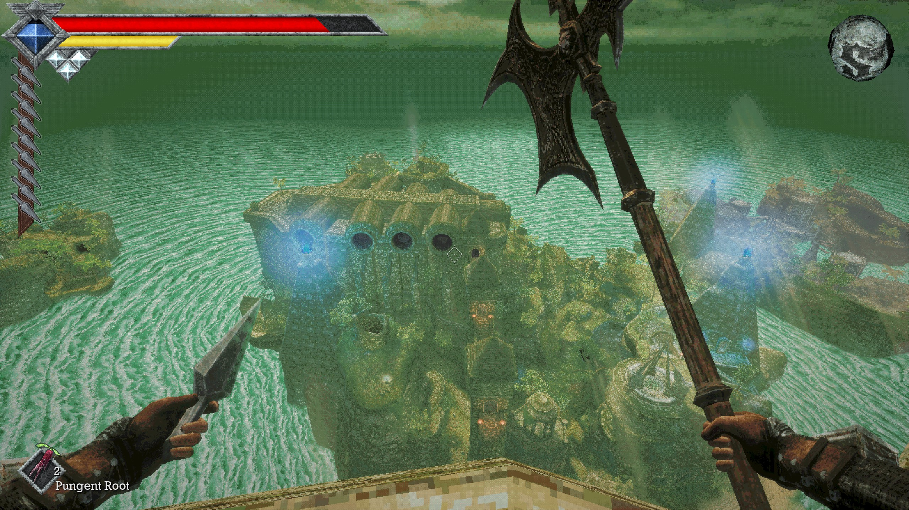

Original
Stock retro resolution behaviour, AA off, game-default filtering, dithering on, original colour steps and full vignette.
A graphics mod by TheExodu5
Reduce patterned dithering, smooth colour gradients and choose your anti-aliasing—all through the game’s own Video menu.
01 / Comparisons
Drag the divider, or focus the slider and use the arrow keys. Choose Fullscreen to enlarge the comparison, or open either full-size image to inspect individual pixels.
Comparison settings: the before shots use Original with Retro Resolution off. The after shots use Modern. These are unretouched gameplay captures; the camera and animated elements can shift slightly between shots.


Original Retro Resolution offModern

Original Retro Resolution offModern

Original Retro Resolution offModern02 / Graphics settings
Find the controls in Options → Video. Choices save automatically and survive restarts.
Stock retro resolution behaviour, AA off, game-default filtering, dithering on, original colour steps and full vignette.
100% resolution, Retro Resolution off, TAA, 16× filtering, dithering off, Smooth + bias gradients and the original vignette.
Your own combination. Changing an individual mod option selects Custom automatically. Brightness and FOV remain yours.
Version 1.0.4 · Free & open source
Choose
one package below.
Includes stable UE4SS 3.0.1, configured and ready to use.
Download Standalone ZIP · 5.3 MBSeparate PAKs and QDGraphics folders for your existing flat or nested UE4SS installation. No loader files included.
Download Mod-only ZIP · 47 KBQueensDomain.exe, merging
folders. Mod-only: copy the two files inside PAKs to
QueensDomain/Content/Paks, and the whole
QDGraphics folder to your active UE4SS Mods folder.
A fresh install preserves your current choices until you change an
option. This mod uses both PAK assets and UE4SS: placing the whole
download in ~mods is not sufficient.
Mod-only destinations: QueensDomain/Binaries/Win64/Mods
for the usual stable layout, or QueensDomain/Binaries/Win64/ue4ss/Mods
for the usual experimental layout. Follow your existing folder structure.
Do not install Standalone over an existing loader.
Full installation instructions.
I tested stable UE4SS 3.0.1 and experimental 3.0.1-1217-g4fb9b615 on Steam build 26496428 with DX11 and DX12 (6 November 2026). Standalone keeps stable 3.0.1. Working v1.0.2 installations do not need an update.
Smooth gradients add shader work; the cost depends on resolution and hardware. The mod retains the game’s colour-grading path, damage effects and cutscene controls. It includes no texture replacements, mip-filtering changes, DLSS or experimental lighting overrides.
Game updates may require a mod update. Other mods replacing
DitherBase, PixelFilter_MPC or
Video_OptionsList can conflict.
Standalone enables the developer console on F10. Run
qd_help for commands or qd_status to
inspect current values. The Video menu works without the console.
Select Original first if you want stock resolution behaviour restored, then close the game.
QueensDomain_Graphics_P.pak and
QueensDomain_GraphicsMenu_P.pak from
QueensDomain/Content/Paks.
QDGraphics from
your active UE4SS Mods folder.
Keep your saves and other mods. For full loader removal and preference-reset instructions, see the README.